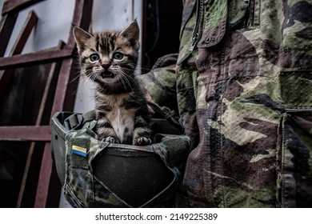
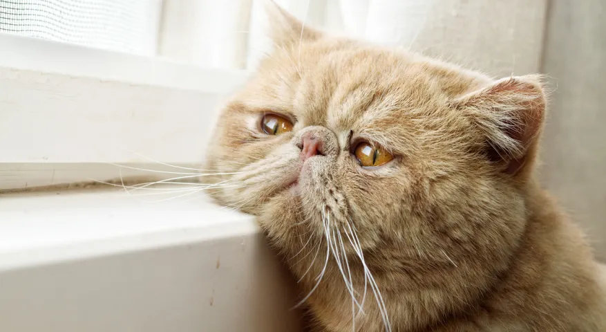
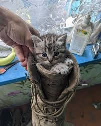

war-affected sad cats

markou" After his house was destroyed, he was forced to live in a box.
2025

rustem"He joined the army to avenge his family and became a general.
2025

putin"Actually, he is a Russian citizen, but he was captured and chose to join the Ukrainian side.
2025

vladimir"After losing its owner, it became depressed and stopped eating.
2025

aleksander" We don't know who he is, but he's very innocent.
2025

veronika" It is thought that she is Alexander's sister, but she has not spoken yet due to trauma.
2025